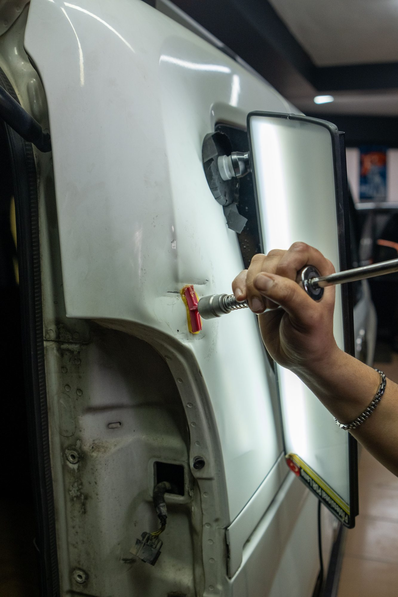

Factory Color Matching
Paint is mixed to your vehicle's factory code and adjusted for age, fade and variance so the new finish reads as original.
↗Factory color matching, professional prep and controlled refinishing. Whether it is one panel after a repair or a full color change, the finish is what people notice first.
Most paint failures are not paint problems. They are preparation problems. Contamination, poor sanding and rushed masking show up months later as peeling, fisheyes and lifted edges.
Refinishing starts long before any color is sprayed. Surfaces are cleaned, sanded to the correct grit, treated for rust or previous repairs, primed and sealed. Adjacent panels, glass, trim and openings are masked so overspray does not land where it does not belong.
Color is mixed from your vehicle's factory paint code, then adjusted. A ten-year-old silver is not the same silver that left the factory, so the mix is tuned to the vehicle in front of us and sprayed on a test card first.
The refinished area is blended into adjacent panels instead of stopping at a panel edge. This is the difference between a repair you can spot from across a parking lot and one you cannot find at all.
Clear coat is applied and cured under controlled conditions, then the finish is inspected and corrected as needed so gloss and texture match the rest of the vehicle.
Repair refinishing, full repaints and custom work, handled in-house.
Paint is mixed to your vehicle's factory code and adjusted for age, fade and variance so the new finish reads as original.
↗New color is faded into adjacent panels rather than stopped at a hard edge, which is what keeps a repair from standing out in daylight.
↗Deep scratches, scuffs, peeling clear coat and failed factory finishes are stripped, prepped and refinished properly.
↗Whole-car refinishing in the original color or a complete color change, including jambs and openings when the job calls for it.
↗Candy, pearl, metallic, satin and multi-stage finishes, plus accent work on roofs, mirrors, trim and calipers.
↗Swirl marks, oxidation and light defects are machine-polished out to restore clarity and gloss on existing paint.
↗Dull, swirled or hazy paint is often still healthy underneath. Machine paint correction removes a microscopic layer of clear coat and restores gloss without any refinishing at all, and it costs far less than a repaint. We tell you which one your vehicle actually needs.
We look at the panel in person and in the right light to determine whether it needs refinishing, correction, or both.
Surfaces are cleaned, sanded, treated and primed. Trim, glass and adjacent panels are masked before anything is sprayed.
Paint is mixed to code, tuned to your vehicle, sprayed and blended into the surrounding panels.
Clear coat is applied and cured, then the finish is inspected and corrected so texture and gloss match the rest of the car.
Searching for auto paint near North Haven, CT? Exclusive Auto Lab handles single-panel repair refinishing, clear coat repair, full repaints, color changes and custom paint for all makes and models.
We also offer paint correction, ceramic coating and paint protection film, so a fresh finish can be protected the moment it is ready instead of months later.
Serving North Haven, New Haven, Hamden, Wallingford, Cheshire, Branford, East Haven, West Haven, Meriden and surrounding Connecticut communities.
A single panel is usually a few days including prep, spray and cure time. A full repaint takes considerably longer because of disassembly, masking, multiple stages and curing between them. We give you a timeline once we have seen the vehicle.
Yes. The factory code is the starting point, then the mix is adjusted for fade and variance and tested before it goes on the car. Blending into adjacent panels handles the rest.
No. Correction polishes the existing clear coat to remove swirls and oxidation. Nothing is sprayed. It restores gloss on healthy paint but cannot fix chips, deep scratches through the clear, or peeling.
Fresh paint continues curing after it leaves the booth. We give you specific guidance at pickup, including when it is safe to wash, when to avoid automatic car washes, and when the finish is ready for wax, ceramic coating or PPF.
Yes. Candy, pearl, metallic, satin and multi-stage finishes are available, as well as accent work like blacked-out roofs, mirror caps, trim and brake calipers.
Paint is permanent and typically the better choice if you want the color to be the car's identity. A vinyl wrap is reversible, protects the paint underneath and is usually a better fit for a leased vehicle or a look you may want to change later.
Reference images showing the kind of work involved. Follow our Instagram for current jobs coming through the shop.



Call, text photos, or request an appointment online. We will tell you what to expect before you bring the vehicle in.